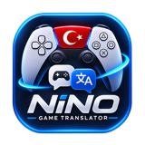
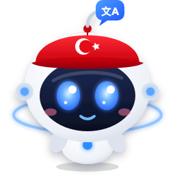

Nino Kurulum Rehberi
Cihazınızı seçin; resim büyük açılır. Her adımda nereye basacağınız kırmızıyla işaretli. TV'ye kurulum bir kez yapılır, sonra Nino TV uygulamasını kendisi günceller.

Takıldınız mı? Nino'ya Sorun.
Nino uygulamasında sağ alttaki robota dokunun, TV'nizin markasını ve ne gördüğünüzü yazın. Ekran ekran anlatır; ekran görüntüsü de gönderebilirsiniz.
İndir: Mac ·
Windows ·
Android telefon ·
iPhone / iPad (TestFlight) ·
Android TV (tv.apk)
Yazılı rehber ve sık sorulanlar: GitHub sayfası